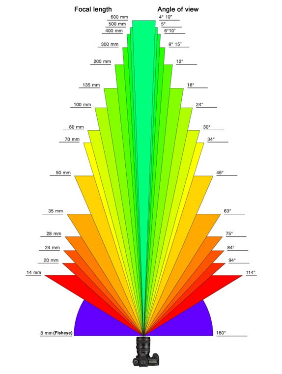
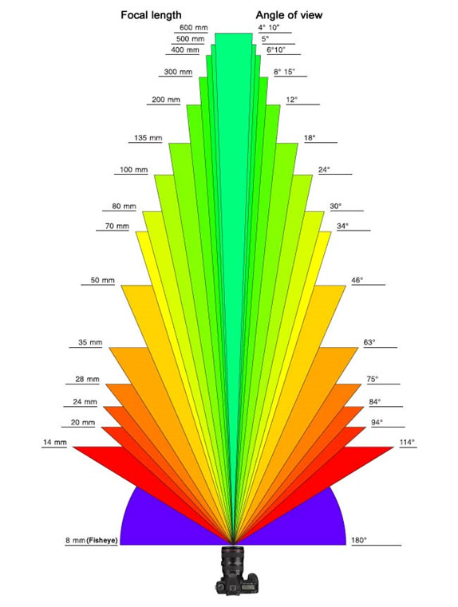

Nhiếp ảnh là 1 môn nghệ thuật tương đối dễ những cũng khá là rối rắm với rất nhiều thông số trong 1 bức ảnh như là: ISO, tốc độ bao nhiêu, khẩu độ thế nào, tiêu cự là gì, ánh sáng ra sao,... Nhưng mọi thứ đều có nguyên tắc chung và các quy chuẩn riêng của nó. Do đó việc nắm bắt những thông số cơ bản nhất để có thể bước chân vào con đường “đau khổ” nhưng cũng cực “sung sướng” này là điều rất cần thiết cho những ai mới bước chân vào nghề chụp ảnh hay chỉ là muốn chơi tìm hiểu cho biết để chụp gia đình, bạn bè cũng chả sao.
Qua một thời gian mò mẫm, tìm hiểu trên internet, và cả kinh nghiệm đi chụp của bản thân, mình tổng hợp 1 số kiến thức căn bản nhất về những thông số cơ bản nhất trong nhiếp ảnh hiện nay, những gì bạn sẽ tìm hiểu dưới đây là một trong những thông số bất di bất dịch trong nhiếp ảnh căn bản từ máy ảnh sử dụng Film cho đến máy ảnh Kỹ thuật số hiện đại và thậm chí cả máy ảnh của SmartPhone. Nắm bắt chính xác, hiểu rõ được những thông số này, thì nhiếp ảnh sẽ trở nên vô cùng dễ dàng cho bạn, bởi vì nhiếp ảnh thực chất chỉ là một cuộc chơi với ánh sáng và điều khiển được nó bạn sẽ điều khiển được gần như mọi thứ trong nghệ thuật nhiếp ảnh.
Qua một thời gian mò mẫm, tìm hiểu trên internet, và cả kinh nghiệm đi chụp của bản thân, mình tổng hợp 1 số kiến thức căn bản nhất về những thông số cơ bản nhất trong nhiếp ảnh hiện nay, những gì bạn sẽ tìm hiểu dưới đây là một trong những thông số bất di bất dịch trong nhiếp ảnh căn bản từ máy ảnh sử dụng Film cho đến máy ảnh Kỹ thuật số hiện đại và thậm chí cả máy ảnh của SmartPhone. Nắm bắt chính xác, hiểu rõ được những thông số này, thì nhiếp ảnh sẽ trở nên vô cùng dễ dàng cho bạn, bởi vì nhiếp ảnh thực chất chỉ là một cuộc chơi với ánh sáng và điều khiển được nó bạn sẽ điều khiển được gần như mọi thứ trong nghệ thuật nhiếp ảnh.
Độ mở của ống kính cho ánh sáng (hình ảnh) đi vào phim hay cảm biến ảnh. Khẩu độ mở càng lớn thì ánh sáng đi vào càng nhiều và ngược lại. Được ký hiệu là F.
Các khẩu độ tiêu chuẩn phổ biến là: 1.4 - 1.8 - 2.8 - 3.2 - 3.5 ....11 - 16 - 22 ...
Khẩu độ càng lớn tương ứng với số giá số thể hiện càng nhỏ. Các số trên càng lớn đồng nghĩa với khẩu độ càng nhỏ.
Hình trên mô tả số khẩu độ F và độ mở của ống kính ở từng chỉ số. Quan sát điều này ta thấy rằng chỉ số F càng nhỏ, độ mở ống càng lớn, ánh sáng đi vào càng nhiều, tương quan với việc tăng tốc độ chụp cao, chụp sẽ ít bị rung (nếu không có chân máy) và hiển nhiên ảnh sẽ sáng đẹp và đúng nét hơn.
Các khẩu độ tiêu chuẩn phổ biến là: 1.4 - 1.8 - 2.8 - 3.2 - 3.5 ....11 - 16 - 22 ...
Khẩu độ càng lớn tương ứng với số giá số thể hiện càng nhỏ. Các số trên càng lớn đồng nghĩa với khẩu độ càng nhỏ.
Hình trên mô tả số khẩu độ F và độ mở của ống kính ở từng chỉ số. Quan sát điều này ta thấy rằng chỉ số F càng nhỏ, độ mở ống càng lớn, ánh sáng đi vào càng nhiều, tương quan với việc tăng tốc độ chụp cao, chụp sẽ ít bị rung (nếu không có chân máy) và hiển nhiên ảnh sẽ sáng đẹp và đúng nét hơn.
Cái mà chúng ta thường gọi là "tốc độ chụp", chúng ta thường chọn là 30s, 15s, 1s, 1/30, 1/60s,… 1/100s,… 1/4000s hay 1/8000s, chính là "thời gian phơi sáng", là "exposure time".
Tốc độ càng thấp ánh sáng vào càng nhiều, ảnh sáng hơn, và ngược lại.
Quan sát hình trên ta sẽ thấy rằng: Chụp ở tốc độ càng thấp thì ảnh sẽ càng sáng hơn, nhưng hình ảnh dễ bị mờ vì chuyển động của đối tượng chụp, do đó tối thiểu chụp ở tốc độ bao nhiêu tùy thuộc rất nhiều yếu tố như: Khẩu độ, ISO, tiêu cự nào? Có chân máy hay không?
Tốc độ càng thấp ánh sáng vào càng nhiều, ảnh sáng hơn, và ngược lại.
Quan sát hình trên ta sẽ thấy rằng: Chụp ở tốc độ càng thấp thì ảnh sẽ càng sáng hơn, nhưng hình ảnh dễ bị mờ vì chuyển động của đối tượng chụp, do đó tối thiểu chụp ở tốc độ bao nhiêu tùy thuộc rất nhiều yếu tố như: Khẩu độ, ISO, tiêu cự nào? Có chân máy hay không?
Độ nhạy sáng ISO của phim hay của cảm biến ảnh trong các máy ảnh kỹ thuật số phát xuất từ những tiêu chuẩn được thông qua do Cơ Quan Tiêu Chuẩn Hoá Quốc Tế (viết tắt là ISO từ tiếng Anh International Organization for Standardization).
ISO càng cao, độ nhạy sáng càng lớn ảnh sẽ càng sáng, nhưng bù lại nó lại bị nhiễu hạt (kiểu như nhạc vặn càng to thì nghe càng rè vậy). Do đó tùy vào điều kiện môi trường mà chúng ta thiết lập chỉ số này sao cho hợp lý nhất để đạt được bức ảnh ưng ý nhất. Thông thường máy ảnh Kỹ thuật số cho phép ISO từ 50 cho đến 25.600, và một số dòng máy đặc biệt có thể tăng ISO đến 3 triệu.
Có thể kết luận rằng: ISO phụ thuộc vào từng điều kiện cụ thể khi chụp mà chúng ta sẽ thiết lập cho đúng. Nếu ở điều kiện ánh sáng tốt ban ngày, trời nắng thì ISO 100 hoặc 200 là hợp lý. Nhưng nếu điều kiện ánh sáng không tốt, trời tối hoặc âm u, nguồn sáng không đủ thì việc hi sinh ISO cao để đủ tốc độ chụp (tất nhiên với khẩu độ nhỏ nhất có thể của ống kính) là việc cần thiết. Đôi khi phải đẩy ISO lên 3200 đến 6400 hoặc cao hơn tùy vào từng loại máy hỗ trợ.
Như vậy: 3 yếu tố trên là 3 yếu tố cơ bản nhất xác định mức độ phơi sáng đúng của một bức ảnh. Một bức ảnh đẹp, đúng sáng thì 3 yếu tố trên phải hài hòa. Giống như 3 cạnh của tam giác cân bên dưới:
ISO càng cao, độ nhạy sáng càng lớn ảnh sẽ càng sáng, nhưng bù lại nó lại bị nhiễu hạt (kiểu như nhạc vặn càng to thì nghe càng rè vậy). Do đó tùy vào điều kiện môi trường mà chúng ta thiết lập chỉ số này sao cho hợp lý nhất để đạt được bức ảnh ưng ý nhất. Thông thường máy ảnh Kỹ thuật số cho phép ISO từ 50 cho đến 25.600, và một số dòng máy đặc biệt có thể tăng ISO đến 3 triệu.
Có thể kết luận rằng: ISO phụ thuộc vào từng điều kiện cụ thể khi chụp mà chúng ta sẽ thiết lập cho đúng. Nếu ở điều kiện ánh sáng tốt ban ngày, trời nắng thì ISO 100 hoặc 200 là hợp lý. Nhưng nếu điều kiện ánh sáng không tốt, trời tối hoặc âm u, nguồn sáng không đủ thì việc hi sinh ISO cao để đủ tốc độ chụp (tất nhiên với khẩu độ nhỏ nhất có thể của ống kính) là việc cần thiết. Đôi khi phải đẩy ISO lên 3200 đến 6400 hoặc cao hơn tùy vào từng loại máy hỗ trợ.
Như vậy: 3 yếu tố trên là 3 yếu tố cơ bản nhất xác định mức độ phơi sáng đúng của một bức ảnh. Một bức ảnh đẹp, đúng sáng thì 3 yếu tố trên phải hài hòa. Giống như 3 cạnh của tam giác cân bên dưới:
Ảnh trên có 1 thông số là “Độ sâu trường ảnh” hay thường gọi là DOF (Depth of field). Vậy DOF là gì, các yếu tố nào ảnh hưởng đến nó, sẽ được mô tả chi tiết trong mục “Độ sâu trường ảnh”.
Ngoài 3 yếu tố Khẩu độ, Tốc độ, ISO cần phải nắm vững, các bạn cần nên biết về tiêu cự ống kính để có thể điều chỉnh tốc độ chụp hợp lý và dựa vào đó để điều chỉnh ISO và Khẩu độ hợp lý hơn. Vậy tiêu cự ống kính là gì?
Tiêu cự của ống kính máy ảnh là thông số cho biết góc nhìn của máy ảnh, nghĩa là khoảng phạm vi mà máy ảnh có thề “thâu tóm” được, nó được tính bằng milimet (mm).
Để diễn giải kỹ hơn về mặt quang học thì tiêu cự của một ống kính là khoảng cách từ tâm ống kính tới bề mặt phim ( hoặc cảm biến hình ảnh) của máy ảnh khi ống kính lấy nét ở vô cực. Tiêu cự của ống kính càng dài thì độ khuếch đại hình ảnh càng lớn. Độ dài tiêu cự và kích thước hình ảnh tỷ lệ thuận với nhau.

Và cũng có thể được biểu diễn góc nhìn tiêu cự bằng 2 hình ảnh dưới đây:

Như vậy: Trên cùng một máy ảnh tại cùng vị trí chụp cùng đối tượng: Khi thay ống kính có tiêu cự 50mm bằng ống kính có tiêu cự 100mm, hình ảnh chụp bằng ống kính có tiêu cự 100mm sẽ lớn gấp đôi hình ảnh chụp với ống kính 50mm trên cùng một máy ảnh và cùng vị trí bấm máy.
Bảng so sánh tiêu cự giữa các cảm biến Full frame 35mm và các loại cảm biến khác với góc nhìn tương ứng:
Vậy thì Cảm biến ảnh là gì??? Mời các bạn xem tiếp mục 5.
Tiêu cự của ống kính máy ảnh là thông số cho biết góc nhìn của máy ảnh, nghĩa là khoảng phạm vi mà máy ảnh có thề “thâu tóm” được, nó được tính bằng milimet (mm).
Để diễn giải kỹ hơn về mặt quang học thì tiêu cự của một ống kính là khoảng cách từ tâm ống kính tới bề mặt phim ( hoặc cảm biến hình ảnh) của máy ảnh khi ống kính lấy nét ở vô cực. Tiêu cự của ống kính càng dài thì độ khuếch đại hình ảnh càng lớn. Độ dài tiêu cự và kích thước hình ảnh tỷ lệ thuận với nhau.
Và cũng có thể được biểu diễn góc nhìn tiêu cự bằng 2 hình ảnh dưới đây:

Như vậy: Trên cùng một máy ảnh tại cùng vị trí chụp cùng đối tượng: Khi thay ống kính có tiêu cự 50mm bằng ống kính có tiêu cự 100mm, hình ảnh chụp bằng ống kính có tiêu cự 100mm sẽ lớn gấp đôi hình ảnh chụp với ống kính 50mm trên cùng một máy ảnh và cùng vị trí bấm máy.
Bảng so sánh tiêu cự giữa các cảm biến Full frame 35mm và các loại cảm biến khác với góc nhìn tương ứng:
Vậy thì Cảm biến ảnh là gì??? Mời các bạn xem tiếp mục 5.
Cảm biến là linh hồn của máy ảnh. Cảm biến là yếu tố quyết định tới kích cỡ ảnh, độ phân giải, khả năng chụp thiếu sáng, độ sâu trường ảnh (depth of field), dải nhạy sáng, ống kính và thậm chí là cả kích cỡ của toàn bộ chiếc máy ảnh/smartphone. Có rất nhiều kích cỡ cảm biến khác nhau cho máy ảnh Kỹ thuật số (ở đây chỉ nói đến các dòng máy DSLR thông dụng trở xuống, các thể loại máy như Medium Format hay Large Format… không bàn ở đây, sẽ có 1 mục khác để nói đến các dòng này) như Full Frame (hay còn gọi là cảm biến 35mm vì cảm biến này có kích thước tương đương phim 35mm ở máy ảnh phim), APS-H (thường thấy ở một số dòng đặc biệt của Canon), APS-C (Rất nhiều hãng như Canon, Nikon, Sony, FujiFilm, Pentax,….), Micro Four Thirds (MFT)(Máy Compact), CX (1 inche)(Máy compact nhỏ, smartphone), 1/2.3 inche (thường dùng trên SmartPhone hiện nay) … Và thông thường máy ảnh có 2 loại cảm biến là CCD và CMOS.
Hình ảnh bên dưới chính là cảm biến của máy ảnh Canon EOS 7D Mark II:
(Nói thêm: Trên điện thoại thì thông thường sẽ sử dụng cảm biến 1/2.3 inche, hoặc 1/1,7 inche tùy hãng trang bị cho smartphone của mình. Ngoài ra Nokia có một số Smartphone như Pure View 808 xài cảm biến ảnh 1/1.2inche khá là bự. Cá biệt hãng Panasonic có 1 dòng điện thoại Lumix CM1 sử dụng cảm biến ảnh có kích thước 1 inch , được cho là cảm biến lớn nhất được trang bị cho smartphone)
Hình trên là kích thước thực của một số loại cảm biến Full Frame, APS-C và các loại cảm biến thông dụng trên các dòng máy ảnh DSLR, Compact hay SmartPhone hiện nay.
Hình bên dưới sẽ mô tả 1 bức ảnh với các cảm biến khác nhau thì bức ảnh đó sẽ có kích thước khác nhau ở cùng 1 tiêu cự được quy ra phim 35mm:
Và chúng ta có 1 bảng so sánh nho nhỏ về Hệ số cắt (crop factor) cho biết tỉ lệ giữa đường chéo máy full frame và đường chéo của các loại cảm biến khác (chỉ nên chú ý đến từ chỗ 35mm full frame thôi nhé, cái Medium Format phía trên từ từ tìm hiểu, căn bản nó là cảm biến nằm ngoài ranh giới của các dòng DSLR thông thường nên sẽ có 1 mục khác dành riêng cho nó).
Cùng một ống kính chụp trên hai loại máy: Một ống kính có tiêu cự 50mm nhưng dùng cho hai loại máy ảnh số với kích thước bộ cảm biến hình ảnh khác nhau. Chẳng hạn máy DSLR "full-frame" tương đương kích thước phim 35mm và máy DSLR "crop sensor" có kích thước bộ cảm biến hình ảnh nhỏ hơn - tỷ lệ 1.3x, 1.5x, 1.6x hay 2x ... thì sẽ có cùng độ khuếch đại nhưng sẽ khác góc thu hình, căn cứ theo đường chéo của bộ cảm biến.
Như vậy, ống kính 50mm trên máy ảnh DSLR full-frame sẽ có góc thu hình rộng hơn là khi gắn trên máy ảnh DSLR crop sensor. Ống kính 50mm của máy ảnh DSLR full-frame là ống kính normal tiêu chuẩn nhưng khi gắn trên máy ảnh DSLR crop sensor lại là một ống kính góc hẹp hơn, tương đương với một tiêu cự dài hơn. Chẳng hạn ống kính 50mm gắn trên máy ảnh số có bộ cảm biến nhỏ tỷ lệ là 1.6x sẽ là 80mm.
Có các hãng máy ảnh sản xuất máy DSLR full-frame song song với dòng DSLR crop sensor. Trong đó, hãng Canon có dòng DSLR crop sensor có hai tỷ lệ khuếch đại là 1.6x và 1.3x; các dòng máy DSLR crop sensor của Nikon, Sony và Pentax đều theo tỷ lệ khuếch đại 1.5x. Máy không gương lật thì có một số dòng lại dùng tỷ lệ khuếch đại 2x.
Hình ảnh bên dưới chính là cảm biến của máy ảnh Canon EOS 7D Mark II:
(Nói thêm: Trên điện thoại thì thông thường sẽ sử dụng cảm biến 1/2.3 inche, hoặc 1/1,7 inche tùy hãng trang bị cho smartphone của mình. Ngoài ra Nokia có một số Smartphone như Pure View 808 xài cảm biến ảnh 1/1.2inche khá là bự. Cá biệt hãng Panasonic có 1 dòng điện thoại Lumix CM1 sử dụng cảm biến ảnh có kích thước 1 inch , được cho là cảm biến lớn nhất được trang bị cho smartphone)
Hình trên là kích thước thực của một số loại cảm biến Full Frame, APS-C và các loại cảm biến thông dụng trên các dòng máy ảnh DSLR, Compact hay SmartPhone hiện nay.
Hình bên dưới sẽ mô tả 1 bức ảnh với các cảm biến khác nhau thì bức ảnh đó sẽ có kích thước khác nhau ở cùng 1 tiêu cự được quy ra phim 35mm:
Và chúng ta có 1 bảng so sánh nho nhỏ về Hệ số cắt (crop factor) cho biết tỉ lệ giữa đường chéo máy full frame và đường chéo của các loại cảm biến khác (chỉ nên chú ý đến từ chỗ 35mm full frame thôi nhé, cái Medium Format phía trên từ từ tìm hiểu, căn bản nó là cảm biến nằm ngoài ranh giới của các dòng DSLR thông thường nên sẽ có 1 mục khác dành riêng cho nó).
Cùng một ống kính chụp trên hai loại máy: Một ống kính có tiêu cự 50mm nhưng dùng cho hai loại máy ảnh số với kích thước bộ cảm biến hình ảnh khác nhau. Chẳng hạn máy DSLR "full-frame" tương đương kích thước phim 35mm và máy DSLR "crop sensor" có kích thước bộ cảm biến hình ảnh nhỏ hơn - tỷ lệ 1.3x, 1.5x, 1.6x hay 2x ... thì sẽ có cùng độ khuếch đại nhưng sẽ khác góc thu hình, căn cứ theo đường chéo của bộ cảm biến.
Như vậy, ống kính 50mm trên máy ảnh DSLR full-frame sẽ có góc thu hình rộng hơn là khi gắn trên máy ảnh DSLR crop sensor. Ống kính 50mm của máy ảnh DSLR full-frame là ống kính normal tiêu chuẩn nhưng khi gắn trên máy ảnh DSLR crop sensor lại là một ống kính góc hẹp hơn, tương đương với một tiêu cự dài hơn. Chẳng hạn ống kính 50mm gắn trên máy ảnh số có bộ cảm biến nhỏ tỷ lệ là 1.6x sẽ là 80mm.
Có các hãng máy ảnh sản xuất máy DSLR full-frame song song với dòng DSLR crop sensor. Trong đó, hãng Canon có dòng DSLR crop sensor có hai tỷ lệ khuếch đại là 1.6x và 1.3x; các dòng máy DSLR crop sensor của Nikon, Sony và Pentax đều theo tỷ lệ khuếch đại 1.5x. Máy không gương lật thì có một số dòng lại dùng tỷ lệ khuếch đại 2x.
Qua 5 mục căn bản như trên, các bạn đã nắm sơ sơ về nhiếp ảnh căn bản, và cũng đã tạm gọi là hiểu được để cho ra 1 bức ảnh thì chúng ta cần những cái gì! Thông thường chụp ảnh bằng điện thoại hay máy Compact và 1 số dòng DSLR nhỏ, các bạn thường để chế độ Tự động chụp (Auto), khi đó máy nó sẽ tự động tính toán toàn bộ các thông số trên để cho ra 1 bức ảnh hoàn hảo nhất và đẹp nhất có thể với các thông số cơ bản do máy thiết lập sẵn. Hi vọng sau khi đọc qua các mục trên, các bạn có thể tự mình thiết lập thông số ảnh cho riêng mình và dần trở thành những nhiếp ảnh gia điều khiển được thiết bị theo ý của mình trong mọi điều kiện ánh sáng.
Light Contrast (Độ tương phản của ánh sáng) – Shadow (bóng) & Highlight (vùng sáng)
Bây giờ chúng ta sẽ bàn về một chủ đề vô cùng quan trọng và căn bản mà bất cứ ai chụp ảnh đều phải quan tâm, đấy là độ tương phản(Contrast) của ánh sáng. Đây cũng là 1 trong 3 yếu tố cơ bản của ánh sáng (bên cạnh còn có Brightness & Color). Hiểu về contrast đặc biệt sẽ giúp chúng ta tạo ra và kiểm soát shadow rất tốt theo ý muốn.
Trước tiên quay trở lại với căn bản. Tại sao chúng ta nhìn một đối tượng thấy tối? Đơn giản là vì không có ánh sáng phản xạ từ nó tới mắt của ta (tạm bỏ qua tính hấp thụ ánh sáng), nôm na nữa là Không được chiếu sáng.
Vậy thì vùng Shadow (bóng) trong một bức ảnh cũng như vậy, nó là vùng nhận được ít ánh sáng chiếu tới nên nó bị tối.
– Ở hình trên thì viền rất dễ nhận ra —> shadow kiểu này tương ứng với Hard. Loại ánh sáng tạo ra shadow này gọi là Hard light.
– Tương tự, hình ở dưới thì rất khó để phân biệt ranh giới giữa phần Shadow và bình thường, shadow kiểu này là Soft. Ánh sáng tạo ra shadow kiểu này gọi là Soft Light.
Trong Photography, Hard shadow thường được dùng để tạo cảm giác mạnh mẽ, khỏe khoắn và bí ẩn. Ngược lại, Soft shadow khi được dùng sẽ mang lại cảm giác yên bình, tĩnh lặng, mềm mại. Vì vậy với từng shot ảnh với các mục tiêu khác nhau để chúng ta quyết định sẽ sử dụng Hard hay Soft shadow.
Ví dụ điển hình như khi chụp portrait, với nam giới, thường chúng ta hay sử dụng ánh sáng hơi hard light 1 chút để nhấn mạnh sự khỏe khoắn.
Khi chụp nữ giới hay trẻ con, thường chúng ta dùng loại soft để tạo sự nhẹ nhàng
Nói như vậy chỉ là chung chung, đôi khi phá cách vẫn tạo ra hiệu ứng tốt. Chụp nữ dùng hard light 1 chút cũng tạo cá tính, chụp nam giới soft 1 chút nhìn thím hơn :v
Làm sao để tạo ra Hard và Soft
Độ soft của ánh sáng liên quan tới:
– Kích thước của nguồn sáng so với đối tượng.
– Khoảng cách từ đối tượng tới nguồn sáng
Nguồn sáng càng lớn (so với đối tượng) thì ánh sáng càng soft.
Như vậy thì nếu muốn tạo ra ánh sáng soft thì làm sao tạo ra nguồn sáng càng to càng tốt. Một số VD:
– Hôm trời không có mây, mặt trời tuy to nhưng nó ở xa quá, đâm ra lại thành nhỏ, mà nguồn sáng nhỏ thì các tia sáng gần như đi song song với nhau, chiếu vào đối tượng gây hard shadow.
– Hôm trời nhiều mây, ánh sáng từ mặt trời tới đập vào mây, phản xạ(tán xạ) tóe loe theo các hướng rồi mới tới đối tượng. Lúc này cả đám mây trở thành 1 nguồn sáng, so với đối tượng thì nó to hơn nhiều là mặt trời vì ở rất gần đối tượng. Do ánh sáng bị tán đều ra, tới đối tượng theo vô vàn hướng và góc khác nhau nên sẽ làm phần bóng đổ của đối tượng soft hơn nhiều.
Tương tự tư duy với softbox trong studio, nếu giữ nguyên khoảng cách từ nguồn sáng tới đối tượng, softbox được dùng để tán đều ánh sáng từ đèn studio ra thành 1 nguồn sáng lớn —–> soft shadow hơn.
Từ một nguồn sáng đèn nhỏ (1) , giờ với softbox ta đã có 1 nguồn sáng to hơn rất nhiều (2) , và hiển nhiên ánh sáng sẽ soft hơn.
– Chụp ảnh trong nhà, tại sao nên hướng flash đánh lên trần vì flash đánh lên trần(trắng) thì ánh sáng được tán đều ra và dội ngược lại —> trần nhà trở thành nguồn sáng to hơn nhiều cái đèn flash —> ánh sáng soft hơn.
Nói thế không phải là cứ dùng softbox thì có soft shadow, nếu dùng softbox nhưng mang nó ra xa thì vô tình là lại trở thành nguồn sáng nhỏ so với đối tượng và vẫn lại là hard shadow thôi.
Trên thị trường giờ có nhiều loại softbox, quan trọng là cái mặt Reflector bên trong nó làm bằng gì. Nếu là vải trắng bình thường thì tán sáng không hiệu quả bằng loại có bề mặt hơi gồ ghề chút vì as khi gặp bề mặt gồ ghề thì tán ra theo nhiều hướng hơn.
Light modifier thì rất nhiều mà softbox chỉ là 1 và cho ra các loại ánh sáng soft ở mức độ khác nhau.
Bây giờ chúng ta sẽ bàn về một chủ đề vô cùng quan trọng và căn bản mà bất cứ ai chụp ảnh đều phải quan tâm, đấy là độ tương phản(Contrast) của ánh sáng. Đây cũng là 1 trong 3 yếu tố cơ bản của ánh sáng (bên cạnh còn có Brightness & Color). Hiểu về contrast đặc biệt sẽ giúp chúng ta tạo ra và kiểm soát shadow rất tốt theo ý muốn.
Trước tiên quay trở lại với căn bản. Tại sao chúng ta nhìn một đối tượng thấy tối? Đơn giản là vì không có ánh sáng phản xạ từ nó tới mắt của ta (tạm bỏ qua tính hấp thụ ánh sáng), nôm na nữa là Không được chiếu sáng.
Vậy thì vùng Shadow (bóng) trong một bức ảnh cũng như vậy, nó là vùng nhận được ít ánh sáng chiếu tới nên nó bị tối.
(Ở hình trên minh họa 2 loại Shadow, sự khách biệt là ở cái viền của Shadow)
– Ở hình trên thì viền rất dễ nhận ra —> shadow kiểu này tương ứng với Hard. Loại ánh sáng tạo ra shadow này gọi là Hard light.
– Tương tự, hình ở dưới thì rất khó để phân biệt ranh giới giữa phần Shadow và bình thường, shadow kiểu này là Soft. Ánh sáng tạo ra shadow kiểu này gọi là Soft Light.
Trong Photography, Hard shadow thường được dùng để tạo cảm giác mạnh mẽ, khỏe khoắn và bí ẩn. Ngược lại, Soft shadow khi được dùng sẽ mang lại cảm giác yên bình, tĩnh lặng, mềm mại. Vì vậy với từng shot ảnh với các mục tiêu khác nhau để chúng ta quyết định sẽ sử dụng Hard hay Soft shadow.
Ví dụ điển hình như khi chụp portrait, với nam giới, thường chúng ta hay sử dụng ánh sáng hơi hard light 1 chút để nhấn mạnh sự khỏe khoắn.
Khi chụp nữ giới hay trẻ con, thường chúng ta dùng loại soft để tạo sự nhẹ nhàng
Nói như vậy chỉ là chung chung, đôi khi phá cách vẫn tạo ra hiệu ứng tốt. Chụp nữ dùng hard light 1 chút cũng tạo cá tính, chụp nam giới soft 1 chút nhìn thím hơn :v
Làm sao để tạo ra Hard và Soft
Độ soft của ánh sáng liên quan tới:
– Kích thước của nguồn sáng so với đối tượng.
– Khoảng cách từ đối tượng tới nguồn sáng
Nguồn sáng càng lớn (so với đối tượng) thì ánh sáng càng soft.
Như vậy thì nếu muốn tạo ra ánh sáng soft thì làm sao tạo ra nguồn sáng càng to càng tốt. Một số VD:
– Hôm trời không có mây, mặt trời tuy to nhưng nó ở xa quá, đâm ra lại thành nhỏ, mà nguồn sáng nhỏ thì các tia sáng gần như đi song song với nhau, chiếu vào đối tượng gây hard shadow.
– Hôm trời nhiều mây, ánh sáng từ mặt trời tới đập vào mây, phản xạ(tán xạ) tóe loe theo các hướng rồi mới tới đối tượng. Lúc này cả đám mây trở thành 1 nguồn sáng, so với đối tượng thì nó to hơn nhiều là mặt trời vì ở rất gần đối tượng. Do ánh sáng bị tán đều ra, tới đối tượng theo vô vàn hướng và góc khác nhau nên sẽ làm phần bóng đổ của đối tượng soft hơn nhiều.
Tương tự tư duy với softbox trong studio, nếu giữ nguyên khoảng cách từ nguồn sáng tới đối tượng, softbox được dùng để tán đều ánh sáng từ đèn studio ra thành 1 nguồn sáng lớn —–> soft shadow hơn.
Từ một nguồn sáng đèn nhỏ (1) , giờ với softbox ta đã có 1 nguồn sáng to hơn rất nhiều (2) , và hiển nhiên ánh sáng sẽ soft hơn.
– Chụp ảnh trong nhà, tại sao nên hướng flash đánh lên trần vì flash đánh lên trần(trắng) thì ánh sáng được tán đều ra và dội ngược lại —> trần nhà trở thành nguồn sáng to hơn nhiều cái đèn flash —> ánh sáng soft hơn.
Nói thế không phải là cứ dùng softbox thì có soft shadow, nếu dùng softbox nhưng mang nó ra xa thì vô tình là lại trở thành nguồn sáng nhỏ so với đối tượng và vẫn lại là hard shadow thôi.
Trên thị trường giờ có nhiều loại softbox, quan trọng là cái mặt Reflector bên trong nó làm bằng gì. Nếu là vải trắng bình thường thì tán sáng không hiệu quả bằng loại có bề mặt hơi gồ ghề chút vì as khi gặp bề mặt gồ ghề thì tán ra theo nhiều hướng hơn.
Light modifier thì rất nhiều mà softbox chỉ là 1 và cho ra các loại ánh sáng soft ở mức độ khác nhau.
Tất cả các hình ảnh và thông tin được tổng hợp từ kinh nghiệm chụp ảnh và sử dụng thiết bị của tác giả biên soạn và trên rất nhiều nguồn trên internet. Website nguồn được ghi trong mục Giới thiệu về ứng dụng.